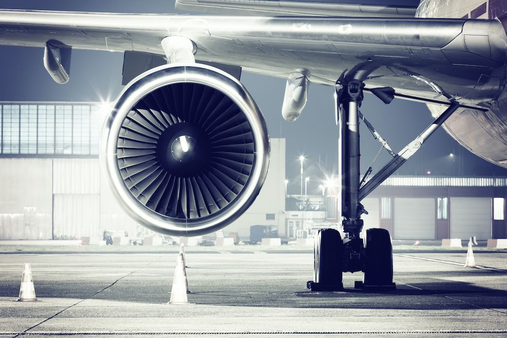
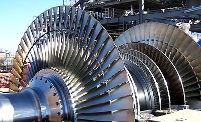
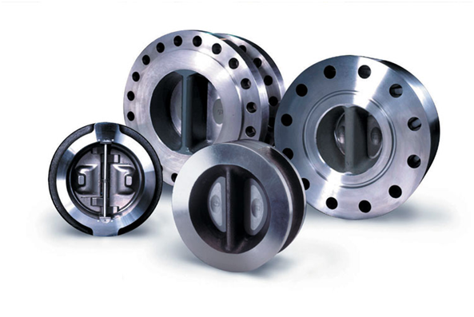
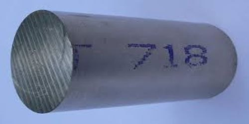

Webinar Series: Superaleaciones y sus aplicaciones en la aeronáutica
Jesús Hernández

En el marco de la serie de webinars "Science and Technology Webinar Series 2024"
organizada por la Secretaría de Investigación de la Subdirección de Estudios de Postgrado de
la Facultad de Ingeniería Mecánica y Eléctrica de la UNL, se llevó a cabo una destacada
videollamada con la participación del Dr. Octavio Covarrubias Alvarado. Este experto, con
técnica sobre las superaleaciones y su aplicación en la fabricación de componentes para
motores de aviones
El Dr. Covarrubias resaltó la importancia de estos materiales, basados en níquel y cobalto,
para resistir las condiciones extremas de temperatura y presión en los motores de aeronaves.Además, contextualizó la evolución histórica de los materiales en la industria aeroespacial,
desde los primeros aviones de tela y madera hasta los modernos motores de reacción con
superaleaciones
La exposición también abordó aspectos clave como la resistencia mecánica y a la corrosión,
así como los avances tecnológicos que han permitido mejorar la eficiencia y durabilidad de
estos componentes.

El Dr. Covarruvias profundizó en la importancia de las pruebas de resistencia a la
deformación en materiales utilizados en motores de aviones. Destacó la relevancia de
controlar los parámetros de fabricación para influir en las características microestructurales
de las aleaciones, esenciales para resistir condiciones extremas.
Se abordó la necesidad de superaleaciones capaces de soportar temperaturas de hasta 1800
grados Celsius, lo que requiere procesos de fusión en condiciones de vacío para minimizar
defectos. Estas superaleaciones, aunque cruciales para la industria aeroespacial, presentan
costos significativamente más altos en comparación con los materiales convencionales.

El Dr. Covarruvias detalló los procesos posteriores, como el billeteo en prensas y forja,
necesarios para mejorar las propiedades metalúrgicas de las aleaciones. Se subrayó la
complejidad del ensamblaje de motores de aviones, que implica decisiones manuales y
supervisión intensiva debido a la diversidad de factores a considerar
La presentación concluyó con la introducción de una nueva superaleación, la 718 Plus, capaz
de operar a 700 grados Celsius, destacando sus ventajas sobre la aleación 718. Este avance
evidencia la constante búsqueda de materiales más eficientes y resistentes para la industria
aeroespacial
